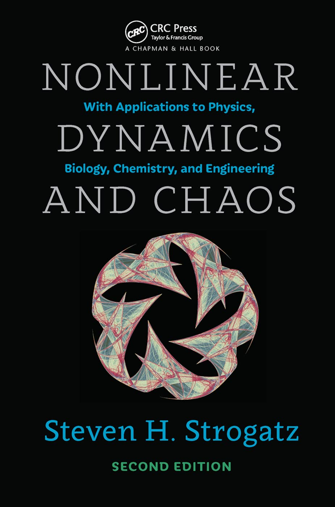

Nonlinear Dynamics and Chaos: With Applications to Physics, Biology, Chemistry, and Engineering
Steven H. Strogatz
Second Edition

1. Overview
1.0 Chaos, Fractals, and Dynamics
1.1 Capsule History of Dynamics
1.2 The Importance of Being Nonlinear
1.3 A Dynamical View of the World
2. Flows on the Line
2.0 Introduction
2.1 A Geometric Way of Thinking
2.2 Fixed Points and Stability
2.3 Population Growth
2.4 Linear Stability Analysis
2.5 Existence and Uniqueness
2.6 Impossibility of Oscillations
2.7 Potentials
2.8 Solving Equations on the Computer
3. Bifurcations
3.0 Introduction
3.1 Saddle-Node Bifurcation
3.2 Transcritical Bifurcation
3.3 Laser Threshold
3.4 Pitchfork Bifurcation
3.5 Overdamped Bead on a Rotating Hoop
3.6 Imperfect Bifurcations and Catastrophes
3.7 Insect Outbreak
4. Flows on the Circle
4.0 Introduction
4.1 Examples and Definitions
4.2 Uniform Oscillator
4.3 Nonuniform Oscillator
4.4 Overdamped Pendulum
4.5 Fireflies
4.6 Superconducting Josephson Junctions
5. Linear Systems
5.0 Introduction
5.1 Definitions and Examples
5.2 Classification of Linear Systems
5.3 Love Affairs
6. Phase Plane
6.0 Introduction
6.1 Phase Portraits
6.2 Existence, Uniqueness, and Topological Consequences
6.3 Fixed Points and Linearization
6.4 Rabbits versus Sheep
6.5 Conservative Systems
6.6 Reversible Systems
6.7 Pendulum
6.8 Index Theory
7. Limit Cycles
7.0 Introduction
7.1 Examples
7.2 Ruling Out Closed Orbits
7.3 Poincaré-Bendixson Theorem
7.4 Liénard Systems
7.5 Relaxation Oscillations
7.6 Weakly Nonlinear Oscillators
8. Bifurcations Revisited
8.0 Introduction
8.1 Saddle-Node, Transcritical, and Pitchfork Bifurcations
8.2 Hopf Bifurcations
8.3 Oscillating Chemical Reactions
8.4 Global Bifurcations of Cycles
8.5 Hysteresis in the Driven Pendulum and Josephson Junction
8.6 Coupled Oscillators and Quasiperiodicity
8.7 Poincaré Maps
9. Lorenz Equations
9.0 Introduction
9.1 A Chaotic Waterwheel
9.2 Simple Properties of the Lorenz Equations
9.3 Chaos on a Strange Attractor
9.4 Lorenz Map
9.5 Exploring Parameter Space
9.6 Using Chaos to Send Secret Messages
10. One-Dimensional Maps
10.0 Introduction
10.1 Fixed Points and Cobwebs
10.2 Logistic Map: Numerics
10.3 Logistic Map: Analysis
10.4 Periodic Windows
10.5 Liapunov Exponent
10.6 Universality and Experiments
10.7 Renormalization
11. Fractals
11.0 Introduction
11.1 Countable and Uncountable Sets
11.2 Cantor Set
11.3 Dimension of Self-Similar Fractals
11.4 Box Dimension
11.5 Pointwise and Correlation Dimensions
12. Strange Attractors
12.0 Introduction
12.1 The Simplest Examples
12.2 Hénon Map
12.3 Rössler System
12.4 Chemical Chaos and Attractor Reconstruction
12.5 Forced Double-Well Oscillator
Back to Home